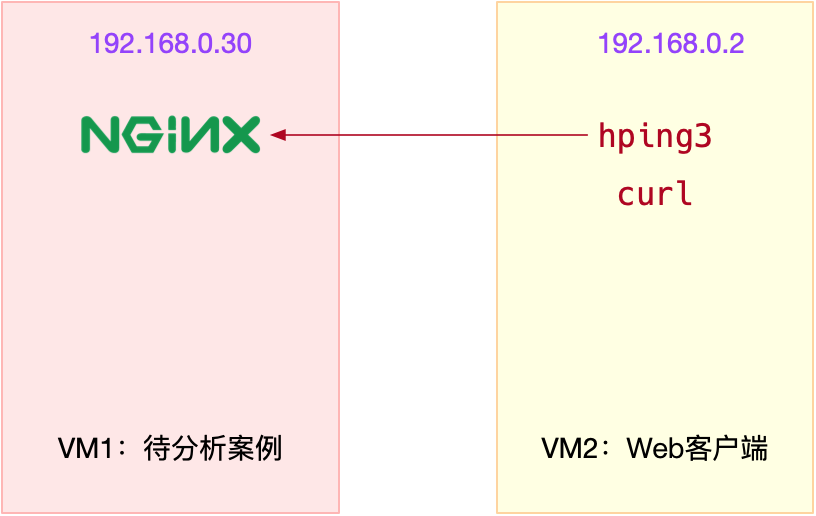
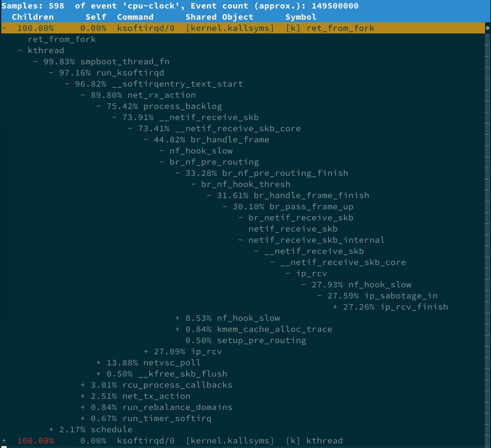
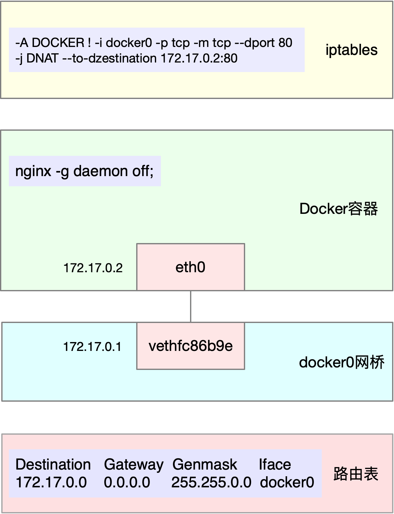
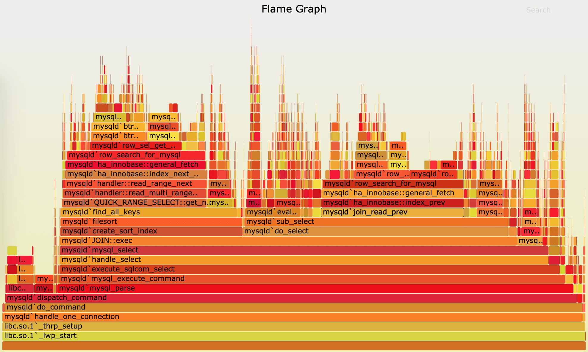
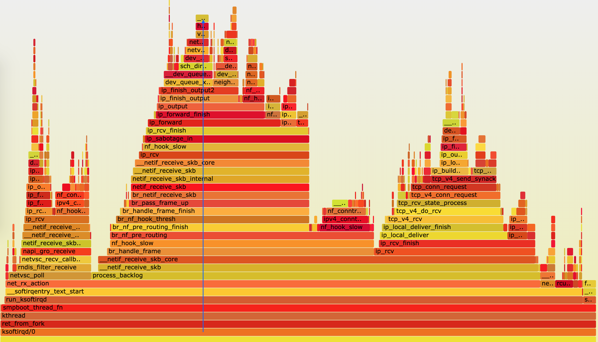
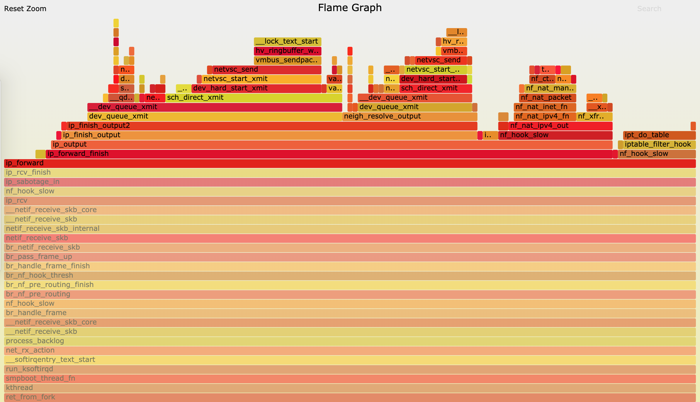

- 00 开篇词 别再让Linux性能问题成为你的绊脚石.md.html
- 01 如何学习Linux性能优化？.md.html
- 02 基础篇：到底应该怎么理解“平均负载”？.md.html
- 03 基础篇：经常说的 CPU 上下文切换是什么意思？（上）.md.html
- 04 基础篇：经常说的 CPU 上下文切换是什么意思？（下）.md.html
- 05 基础篇：某个应用的CPU使用率居然达到100%，我该怎么办？.md.html
- 06 案例篇：系统的 CPU 使用率很高，但为啥却找不到高 CPU 的应用？.md.html
- 07 案例篇：系统中出现大量不可中断进程和僵尸进程怎么办？（上）.md.html
- 08 案例篇：系统中出现大量不可中断进程和僵尸进程怎么办？（下）.md.html
- 09 基础篇：怎么理解Linux软中断？.md.html
- 10 案例篇：系统的软中断CPU使用率升高，我该怎么办？.md.html
- 11 套路篇：如何迅速分析出系统CPU的瓶颈在哪里？.md.html
- 12 套路篇：CPU 性能优化的几个思路.md.html
- 13 答疑（一）：无法模拟出 RES 中断的问题，怎么办？.md.html
- 14 答疑（二）：如何用perf工具分析Java程序？.md.html
- 15 基础篇：Linux内存是怎么工作的？.md.html
- 16 基础篇：怎么理解内存中的Buffer和Cache？.md.html
- 17 案例篇：如何利用系统缓存优化程序的运行效率？.md.html
- 18 案例篇：内存泄漏了，我该如何定位和处理？.md.html
- 19 案例篇：为什么系统的Swap变高了（上）.md.html
- 20 案例篇：为什么系统的Swap变高了？（下）.md.html
- 21 套路篇：如何“快准狠”找到系统内存的问题？.md.html
- 22 答疑（三）：文件系统与磁盘的区别是什么？.md.html
- 23 基础篇：Linux 文件系统是怎么工作的？.md.html
- 24 基础篇：Linux 磁盘I_O是怎么工作的（上）.md.html
- 25 基础篇：Linux 磁盘I_O是怎么工作的（下）.md.html
- 26 案例篇：如何找出狂打日志的“内鬼”？.md.html
- 27 案例篇：为什么我的磁盘I_O延迟很高？.md.html
- 28 案例篇：一个SQL查询要15秒，这是怎么回事？.md.html
- 29 案例篇：Redis响应严重延迟，如何解决？.md.html
- 30 套路篇：如何迅速分析出系统I_O的瓶颈在哪里？.md.html
- 31 套路篇：磁盘 I_O 性能优化的几个思路.md.html
- 32 答疑（四）：阻塞、非阻塞 I_O 与同步、异步 I_O 的区别和联系.md.html
- 33 关于 Linux 网络，你必须知道这些（上）.md.html
- 34 关于 Linux 网络，你必须知道这些（下）.md.html
- 35 基础篇：C10K 和 C1000K 回顾.md.html
- 36 套路篇：怎么评估系统的网络性能？.md.html
- 37 案例篇：DNS 解析时快时慢，我该怎么办？.md.html
- 38 案例篇：怎么使用 tcpdump 和 Wireshark 分析网络流量？.md.html
- 39 案例篇：怎么缓解 DDoS 攻击带来的性能下降问题？.md.html
- 40 案例篇：网络请求延迟变大了，我该怎么办？.md.html
- 41 案例篇：如何优化 NAT 性能？（上）.md.html
- 42 案例篇：如何优化 NAT 性能？（下）.md.html
- 43 套路篇：网络性能优化的几个思路（上）.md.html
- 44 套路篇：网络性能优化的几个思路（下）.md.html
- 45 答疑（五）：网络收发过程中，缓冲区位置在哪里？.md.html
- 46 案例篇：为什么应用容器化后，启动慢了很多？.md.html
- 47 案例篇：服务器总是时不时丢包，我该怎么办？（上）.md.html
- 48 案例篇：服务器总是时不时丢包，我该怎么办？（下）.md.html
- 49 案例篇：内核线程 CPU 利用率太高，我该怎么办？.md.html
- 50 案例篇：动态追踪怎么用？（上）.md.html
- 51 案例篇：动态追踪怎么用？（下）.md.html
- 52 案例篇：服务吞吐量下降很厉害，怎么分析？.md.html
- 53 套路篇：系统监控的综合思路.md.html
- 54 套路篇：应用监控的一般思路.md.html
- 55 套路篇：分析性能问题的一般步骤.md.html
- 56 套路篇：优化性能问题的一般方法.md.html
- 57 套路篇：Linux 性能工具速查.md.html
- 58 答疑（六）：容器冷启动如何性能分析？.md.html
- 加餐（一） 书单推荐：性能优化和Linux 系统原理.md.html
- 加餐（二） 书单推荐：网络原理和 Linux 内核实现.md.html
- 用户故事 “半路出家 ”，也要顺利拿下性能优化！.md.html
- 用户故事 运维和开发工程师们怎么说？.md.html
- 结束语 愿你攻克性能难关.md.html
- 捐赠
49 案例篇：内核线程 CPU 利用率太高，我该怎么办？
你好，我是倪朋飞。
上一期，我们一起梳理了，网络时不时丢包的分析定位和优化方法。先简单回顾一下。
网络丢包，通常会带来严重的性能下降，特别是对 TCP 来说，丢包通常意味着网络拥塞和重传，进而会导致网络延迟增大以及吞吐量降低。
而分析丢包问题，还是用我们的老套路，从 Linux 网络收发的流程入手，结合 TCP/IP 协议栈的原理来逐层分析。
其实，在排查网络问题时，我们还经常碰到的一个问题，就是内核线程的 CPU 使用率很高。比如，在高并发的场景中，内核线程 ksoftirqd 的 CPU 使用率通常就会比较高。回顾一下前面学过的 CPU 和网络模块，你应该知道，这是网络收发的软中断导致的。
而要分析 ksoftirqd 这类 CPU 使用率比较高的内核线程，如果用我前面介绍过的那些分析方法，你一般需要借助于其他性能工具，进行辅助分析。
比如，还是以 ksoftirqd 为例，如果你怀疑是网络问题，就可以用 sar、tcpdump 等分析网络流量，进一步确认网络问题的根源。
不过，显然，这种方法在实际操作中需要步骤比较多，可能并不算快捷。你肯定也很想知道，有没有其他更简单的方法，可以直接观察内核线程的行为，更快定位瓶颈呢？
今天，我就继续以 ksoftirqd 为例，带你一起看看，如何分析内核线程的性能问题。
内核线程
既然要讲内核线程的性能问题，在案例开始之前，我们就先来看看，有哪些常见的内核线程。
我们知道，在 Linux 中，用户态进程的“祖先”，都是 PID 号为 1 的 init 进程。比如，现在主流的 Linux 发行版中，init 都是 systemd 进程；而其他的用户态进程，会通过 systemd 来进行管理。
稍微想一下 Linux 中的各种进程，除了用户态进程外，还有大量的内核态线程。按说内核态的线程，应该先于用户态进程启动，可是 systemd 只管理用户态进程。那么，内核态线程又是谁来管理的呢？
实际上，Linux 在启动过程中，有三个特殊的进程，也就是 PID 号最小的三个进程。
0 号进程为 idle 进程，这也是系统创建的第一个进程，它在初始化 1 号和 2 号进程后，演变为空闲任务。当 CPU 上没有其他任务执行时，就会运行它。
1 号进程为 init 进程，通常是 systemd 进程，在用户态运行，用来管理其他用户态进程。
2 号进程为 kthreadd 进程，在内核态运行，用来管理内核线程。
所以，要查找内核线程，我们只需要从 2 号进程开始，查找它的子孙进程即可。比如，你可以使用 ps 命令，来查找 kthreadd 的子进程：
$ ps -f --ppid 2 -p 2
UID PID PPID C STIME TTY TIME CMD
root 2 0 0 12:02 ? 00:00:01 [kthreadd]
root 9 2 0 12:02 ? 00:00:21 [ksoftirqd/0]
root 10 2 0 12:02 ? 00:11:47 [rcu_sched]
root 11 2 0 12:02 ? 00:00:18 [migration/0]
...
root 11094 2 0 14:20 ? 00:00:00 [kworker/1:0-eve]
root 11647 2 0 14:27 ? 00:00:00 [kworker/0:2-cgr]
从上面的输出，你能够看到，内核线程的名称（CMD）都在中括号里（这一点，我们前面内容也有提到过）。所以，更简单的方法，就是直接查找名称包含中括号的进程。比如：
$ ps -ef | grep "\[.*\]"
root 2 0 0 08:14 ? 00:00:00 [kthreadd]
root 3 2 0 08:14 ? 00:00:00 [rcu_gp]
root 4 2 0 08:14 ? 00:00:00 [rcu_par_gp]
...
了解内核线程的基本功能，对我们排查问题有非常大的帮助。比如，我们曾经在软中断案例中提到过 ksoftirqd。它是一个用来处理软中断的内核线程，并且每个 CPU 上都有一个。
如果你知道了这一点，那么，以后遇到 ksoftirqd 的 CPU 使用高的情况，就会首先怀疑是软中断的问题，然后从软中断的角度来进一步分析。
其实，除了刚才看到的 kthreadd 和 ksoftirqd 外，还有很多常见的内核线程，我们在性能分析中都经常会碰到，比如下面这几个内核线程。
kswapd0：用于内存回收。在 Swap变高 案例中，我曾介绍过它的工作原理。
kworker：用于执行内核工作队列，分为绑定 CPU （名称格式为 kworker/CPU:ID）和未绑定 CPU（名称格式为 kworker/uPOOL:ID）两类。
migration：在负载均衡过程中，把进程迁移到 CPU 上。每个 CPU 都有一个 migration 内核线程。
jbd2/sda1-8：jbd 是 Journaling Block Device 的缩写，用来为文件系统提供日志功能，以保证数据的完整性；名称中的 sda1-8，表示磁盘分区名称和设备号。每个使用了 ext4 文件系统的磁盘分区，都会有一个 jbd2 内核线程。
pdflush：用于将内存中的脏页（被修改过，但还未写入磁盘的文件页）写入磁盘（已经在 3.10 中合并入了 kworker 中）。
了解这几个容易发生性能问题的内核线程，有助于我们更快地定位性能瓶颈。接下来，我们来看今天的案例。
案例准备
今天的案例还是基于 Ubuntu 18.04，同样适用于其他的 Linux 系统。我使用的案例环境如下所示：
机器配置：2 CPU，8GB 内存。
预先安装 docker、perf、hping3、curl 等工具，如 apt install docker.io linux-tools-common hping3。
本次案例用到两台虚拟机，我画了一张图来表示它们的关系。

你需要打开两个终端，分别登录这两台虚拟机中，并安装上述工具。
注意，以下所有命令都默认以 root 用户运行，如果你用普通用户身份登陆系统，请运行 sudo su root 命令，切换到 root 用户。
如果安装过程有问题，你可以先上网搜索解决，实在解决不了的，记得在留言区向我提问。
到这里，准备工作就完成了。接下来，我们正式进入操作环节。
案例分析
安装完成后，我们先在第一个终端，执行下面的命令运行案例，也就是一个最基本的 Nginx 应用：
# 运行Nginx服务并对外开放80端口
$ docker run -itd --name=nginx -p 80:80 nginx
然后，在第二个终端，使用 curl 访问 Nginx 监听的端口，确认 Nginx 正常启动。假设 192.168.0.30 是 Nginx 所在虚拟机的 IP 地址，运行 curl 命令后，你应该会看到下面这个输出界面：
$ curl http://192.168.0.30/
<!DOCTYPE html>
<html>
<head>
<title>Welcome to nginx!</title>
...
接着，还是在第二个终端中，运行 hping3 命令，模拟 Nginx 的客户端请求：
# -S参数表示设置TCP协议的SYN（同步序列号），-p表示目的端口为80
# -i u10表示每隔10微秒发送一个网络帧
# 注：如果你在实践过程中现象不明显，可以尝试把10调小，比如调成5甚至1
$ hping3 -S -p 80 -i u10 192.168.0.30
现在，我们再回到第一个终端，你应该就会发现异常——系统的响应明显变慢了。我们不妨执行 top，观察一下系统和进程的 CPU 使用情况：
$ top
top - 08:31:43 up 17 min, 1 user, load average: 0.00, 0.00, 0.02
Tasks: 128 total, 1 running, 69 sleeping, 0 stopped, 0 zombie
%Cpu0 : 0.3 us, 0.3 sy, 0.0 ni, 66.8 id, 0.3 wa, 0.0 hi, 32.4 si, 0.0 st
%Cpu1 : 0.0 us, 0.3 sy, 0.0 ni, 65.2 id, 0.0 wa, 0.0 hi, 34.5 si, 0.0 st
KiB Mem : 8167040 total, 7234236 free, 358976 used, 573828 buff/cache
KiB Swap: 0 total, 0 free, 0 used. 7560460 avail Mem
PID USER PR NI VIRT RES SHR S %CPU %MEM TIME+ COMMAND
9 root 20 0 0 0 0 S 7.0 0.0 0:00.48 ksoftirqd/0
18 root 20 0 0 0 0 S 6.9 0.0 0:00.56 ksoftirqd/1
2489 root 20 0 876896 38408 21520 S 0.3 0.5 0:01.50 docker-containe
3008 root 20 0 44536 3936 3304 R 0.3 0.0 0:00.09 top
1 root 20 0 78116 9000 6432 S 0.0 0.1 0:11.77 systemd
...
从 top 的输出中，你可以看到，两个 CPU 的软中断使用率都超过了 30%；而 CPU 使用率最高的进程，正好是软中断内核线程 ksoftirqd/0 和 ksoftirqd/1。
虽然，我们已经知道了 ksoftirqd 的基本功能，可以猜测是因为大量网络收发，引起了 CPU 使用率升高；但它到底在执行什么逻辑，我们却并不知道。
对于普通进程，我们要观察其行为有很多方法，比如 strace、pstack、lsof 等等。但这些工具并不适合内核线程，比如，如果你用 pstack ，或者通过 /proc/pid/stack 查看 ksoftirqd/0（进程号为 9）的调用栈时，分别可以得到以下输出：
$ pstack 9
Could not attach to target 9: Operation not permitted.
detach: No such process
$ cat /proc/9/stack
[<0>] smpboot_thread_fn+0x166/0x170
[<0>] kthread+0x121/0x140
[<0>] ret_from_fork+0x35/0x40
[<0>] 0xffffffffffffffff
显然，pstack 报出的是不允许挂载进程的错误；而 /proc/9/stack 方式虽然有输出，但输出中并没有详细的调用栈情况。
那还有没有其他方法，来观察内核线程 ksoftirqd 的行为呢？
既然是内核线程，自然应该用到内核中提供的机制。回顾一下我们之前用过的 CPU 性能工具，我想你肯定还记得 perf ，这个内核自带的性能剖析工具。
perf 可以对指定的进程或者事件进行采样，并且还可以用调用栈的形式，输出整个调用链上的汇总信息。 我们不妨就用 perf ，来试着分析一下进程号为 9 的 ksoftirqd。
继续在终端一中，执行下面的 perf record 命令；并指定进程号 9 ，以便记录 ksoftirqd 的行为:
# 采样30s后退出
$ perf record -a -g -p 9 -- sleep 30
稍等一会儿，在上述命令结束后，继续执行 perf report命令，你就可以得到 perf 的汇总报告。按上下方向键以及回车键，展开比例最高的 ksoftirqd 后，你就可以得到下面这个调用关系链图：

从这个图中，你可以清楚看到 ksoftirqd 执行最多的调用过程。虽然你可能不太熟悉内核源码，但通过这些函数，我们可以大致看出它的调用栈过程。
net_rx_action 和 netif_receive_skb，表明这是接收网络包（rx 表示 receive）。
br_handle_frame ，表明网络包经过了网桥（br 表示 bridge）。
br_nf_pre_routing ，表明在网桥上执行了 netfilter 的 PREROUTING（nf 表示 netfilter）。而我们已经知道 PREROUTING 主要用来执行 DNAT，所以可以猜测这里有 DNAT 发生。
br_pass_frame_up，表明网桥处理后，再交给桥接的其他桥接网卡进一步处理。比如，在新的网卡上接收网络包、执行 netfilter 过滤规则等等。
我们的猜测对不对呢？实际上，我们案例最开始用 Docker 启动了容器，而 Docker 会自动为容器创建虚拟网卡、桥接到 docker0 网桥并配置 NAT 规则。这一过程，如下图所示：

当然了，前面 perf report 界面的调用链还可以继续展开。但很不幸，我的屏幕不够大，如果展开更多的层级，最后几个层级会超出屏幕范围。这样，即使我们能看到大部分的调用过程，却也不能说明后面层级就没问题。
那么，有没有更好的方法，来查看整个调用栈的信息呢？
火焰图
针对 perf 汇总数据的展示问题，Brendan Gragg 发明了火焰图，通过矢量图的形式，更直观展示汇总结果。下图就是一个针对 mysql 的火焰图示例。

（图片来自 Brendan Gregg 博客）
这张图看起来像是跳动的火焰，因此也就被称为火焰图。要理解火焰图，我们最重要的是区分清楚横轴和纵轴的含义。
横轴表示采样数和采样比例。一个函数占用的横轴越宽，就代表它的执行时间越长。同一层的多个函数，则是按照字母来排序。
纵轴表示调用栈，由下往上根据调用关系逐个展开。换句话说，上下相邻的两个函数中，下面的函数，是上面函数的父函数。这样，调用栈越深，纵轴就越高。
另外，要注意图中的颜色，并没有特殊含义，只是用来区分不同的函数。
火焰图是动态的矢量图格式，所以它还支持一些动态特性。比如，鼠标悬停到某个函数上时，就会自动显示这个函数的采样数和采样比例。而当你用鼠标点击函数时，火焰图就会把该层及其上的各层放大，方便你观察这些处于火焰图顶部的调用栈的细节。
上面 mysql 火焰图的示例，就表示了 CPU 的繁忙情况，这种火焰图也被称为 on-CPU 火焰图。如果我们根据性能分析的目标来划分，火焰图可以分为下面这几种。
on-CPU 火焰图：表示 CPU 的繁忙情况，用在 CPU 使用率比较高的场景中。
off-CPU 火焰图：表示 CPU 等待 I/O、锁等各种资源的阻塞情况。
内存火焰图：表示内存的分配和释放情况。
热/冷火焰图：表示将 on-CPU 和 off-CPU 结合在一起综合展示。
差分火焰图：表示两个火焰图的差分情况，红色表示增长，蓝色表示衰减。差分火焰图常用来比较不同场景和不同时期的火焰图，以便分析系统变化前后对性能的影响情况。
了解了火焰图的含义和查看方法后，接下来，我们再回到案例，运用火焰图来观察刚才 perf record 得到的记录。
火焰图分析
首先，我们需要生成火焰图。我们先下载几个能从 perf record 记录生成火焰图的工具，这些工具都放在 https://github.com/brendangregg/FlameGraph 上面。你可以执行下面的命令来下载：
$ git clone https://github.com/brendangregg/FlameGraph
$ cd FlameGraph
安装好工具后，要生成火焰图，其实主要需要三个步骤：
执行 perf script ，将 perf record 的记录转换成可读的采样记录；
执行 stackcollapse-perf.pl 脚本，合并调用栈信息；
执行 flamegraph.pl 脚本，生成火焰图。
不过，在 Linux 中，我们可以使用管道，来简化这三个步骤的执行过程。假设刚才用 perf record 生成的文件路径为 /root/perf.data，执行下面的命令，你就可以直接生成火焰图：
$ perf script -i /root/perf.data | ./stackcollapse-perf.pl --all | ./flamegraph.pl > ksoftirqd.svg
执行成功后，使用浏览器打开 ksoftirqd.svg ，你就可以看到生成的火焰图了。如下图所示：

根据刚刚讲过的火焰图原理，这个图应该从下往上看，沿着调用栈中最宽的函数来分析执行次数最多的函数。这儿看到的结果，其实跟刚才的 perf report 类似，但直观了很多，中间这一团火，很明显就是最需要我们关注的地方。
我们顺着调用栈由下往上看（顺着图中蓝色箭头），就可以得到跟刚才 perf report 中一样的结果：
最开始，还是 net_rx_action 到 netif_receive_skb 处理网络收包；
然后， br_handle_frame 到 br_nf_pre_routing ，在网桥中接收并执行 netfilter 钩子函数；
再向上， br_pass_frame_up 到 netif_receive_skb ，从网桥转到其他网络设备又一次接收。
不过最后，到了 ip_forward 这里，已经看不清函数名称了。所以我们需要点击 ip_forward，展开最上面这一块调用栈：

这样，就可以进一步看到 ip_forward 后的行为，也就是把网络包发送出去。根据这个调用过程，再结合我们前面学习的网络收发和 TCP/IP 协议栈原理，这个流程中的网络接收、网桥以及 netfilter 调用等，都是导致软中断 CPU 升高的重要因素，也就是影响网络性能的潜在瓶颈。
不过，回想一下网络收发的流程，你可能会觉得它缺了好多步骤。
比如，这个堆栈中并没有 TCP 相关的调用，也没有连接跟踪 conntrack 相关的函数。实际上，这些流程都在其他更小的火焰中，你可以点击上图左上角的“Reset Zoom”，回到完整火焰图中，再去查看其他小火焰的堆栈。
所以，在理解这个调用栈时要注意。从任何一个点出发、纵向来看的整个调用栈，其实只是最顶端那一个函数的调用堆栈，而非完整的内核网络执行流程。
另外，整个火焰图不包含任何时间的因素，所以并不能看出横向各个函数的执行次序。
到这里，我们就找出了内核线程 ksoftirqd 执行最频繁的函数调用堆栈，而这个堆栈中的各层级函数，就是潜在的性能瓶颈来源。这样，后面想要进一步分析、优化时，也就有了根据。
小结
今天这个案例，你可能会觉得比较熟悉。实际上，这个案例，正是我们专栏 CPU 模块中的 软中断案例。
当时，我们从软中断 CPU 使用率的角度入手，用网络抓包的方法找出了瓶颈来源，确认是测试机器发送的大量 SYN 包导致的。而通过今天的 perf 和火焰图方法，我们进一步找出了软中断内核线程的热点函数，其实也就找出了潜在的瓶颈和优化方向。
其实，如果遇到的是内核线程的资源使用异常，很多常用的进程级性能工具并不能帮上忙。这时，你就可以用内核自带的 perf 来观察它们的行为，找出热点函数，进一步定位性能瓶。当然，perf 产生的汇总报告并不够直观，所以我也推荐你用火焰图来协助排查。
实际上，火焰图方法同样适用于普通进程。比如，在分析 Nginx、MySQL 等各种应用场景的性能问题时，火焰图也能帮你更快定位热点函数，找出潜在性能问题。
思考
最后，我想邀请你一起来聊聊，你碰到过的内核线程性能问题。你是怎么分析它们的根源？又是怎么解决的？你可以结合我的讲述，总结自己的思路。
欢迎在留言区和我讨论，也欢迎把这篇文章分享给你的同事、朋友。我们一起在实战中演练，在交流中进步。
© 2019 - 2023 Liangliang Lee. Powered by gin and hexo-theme-book.